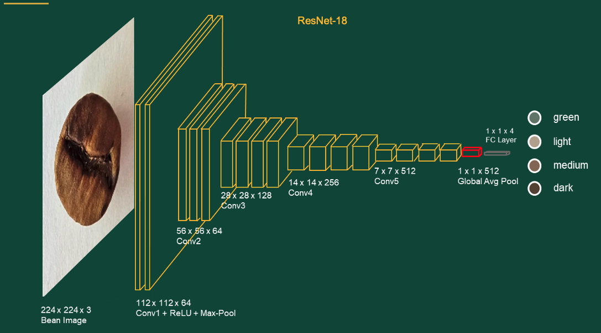

RoastAI — Clasificación de granos de café con Deep Learning

Resumen del proyecto
En el mundo del café, el nivel de tostado del grano define el sabor y la calidad del producto. Normalmente eso lo evalúa un experto mirando el color, pero es subjetivo y puede variar. La idea de RoastAI fue automatizar esa tarea: entrenar un modelo que, a partir de una foto del grano, identifique si es verde, tostado claro, medio u oscuro.
Este proyecto lo hicimos en equipo con Diego Aguiar y Catalina Vaz Martins durante el taller MIT Global Teaching Labs — AI Uruguay 2026, en enero. Fue intenso porque duró menos de dos semanas. El dataset original tenía imágenes de granos en las cuatro categorías, pero detectamos que había contaminación entre los datos de entrenamiento y test. Para solucionarlo, sacamos nosotros mismos más de 150 fotos nuevas respetando las condiciones del dataset original: fondo blanco, un solo grano y buena luz.
Usamos ResNet18, una red neuronal pre-entrenada, y le hicimos fine-tuning para nuestra tarea. También implementamos Grad-CAM para poder visualizar qué parte de la imagen mira el modelo cuando clasifica, lo cual es fundamental para verificar que realmente se fija en el grano y no en el fondo.
Los resultados fueron muy buenos: 98.59% de accuracy en test, clasificando bien 350 de 355 imágenes. El Grad-CAM confirmó que la atención del modelo se concentra en los granos. Este proyecto nos dio el 3er puesto en la presentación final del taller, y fue una experiencia que disfruté mucho porque combinó el trabajo práctico con un tema interesante.